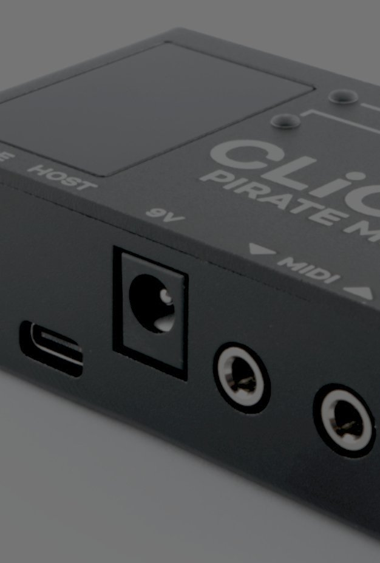
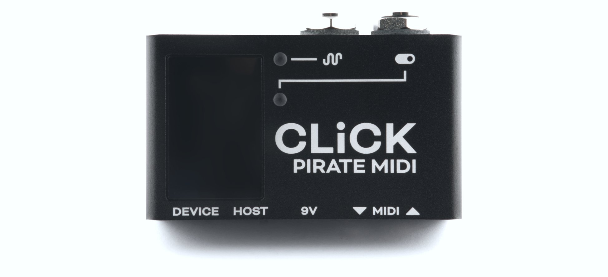
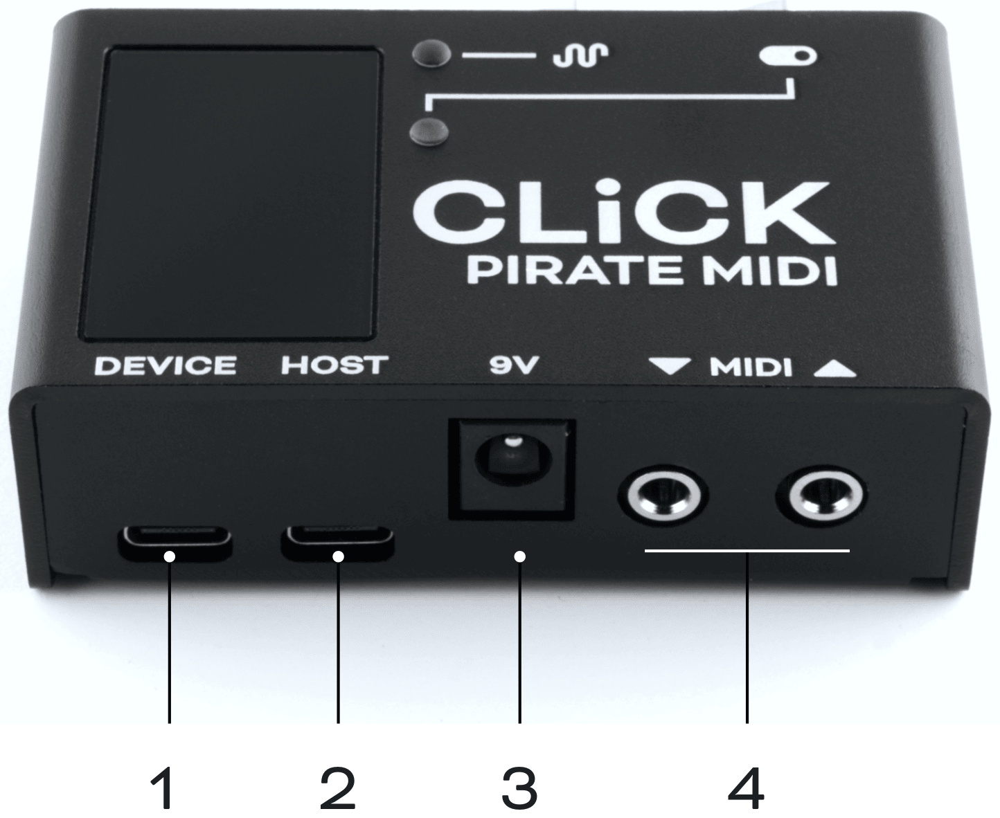
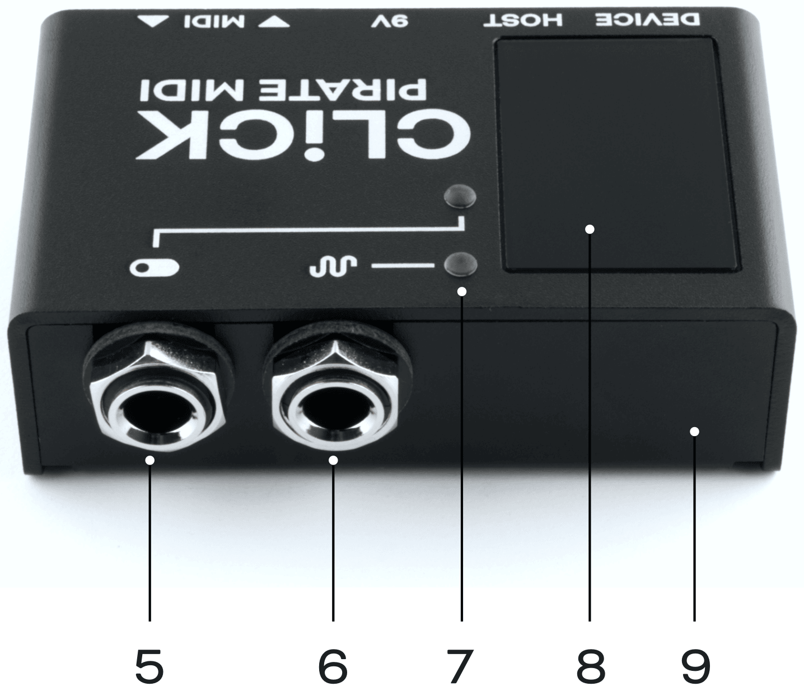
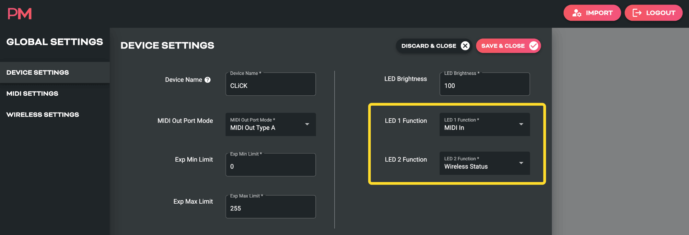
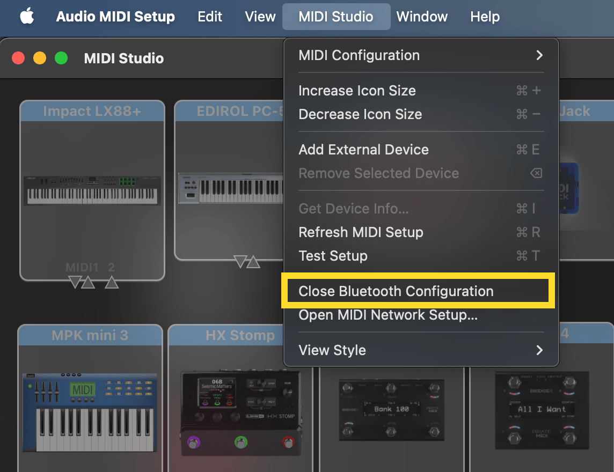
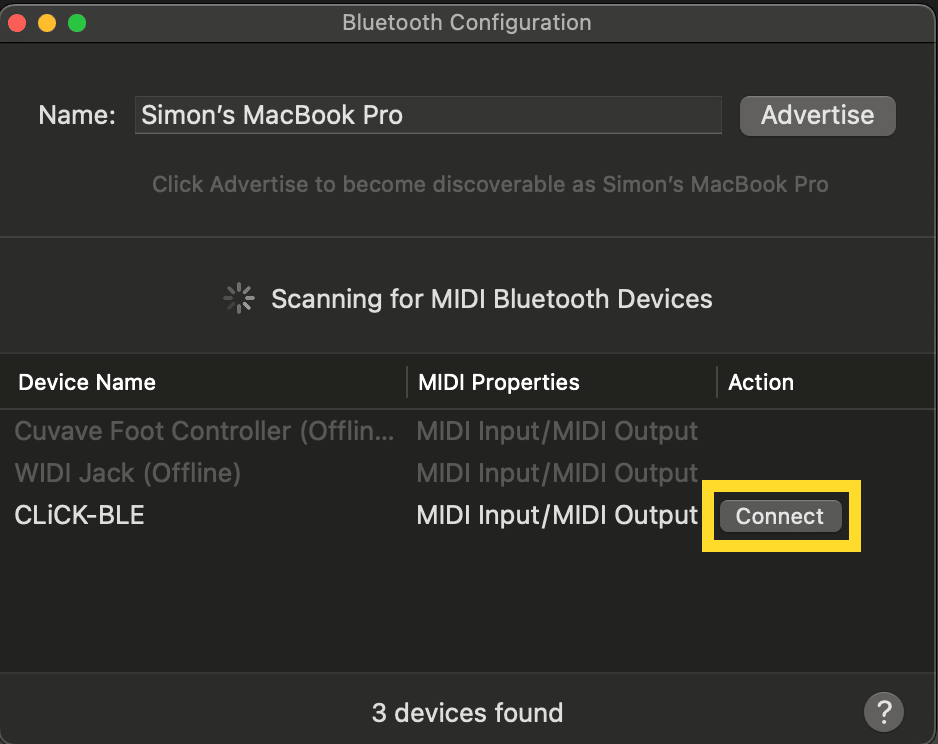
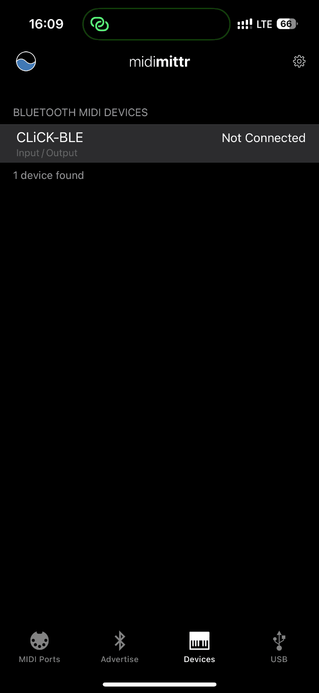
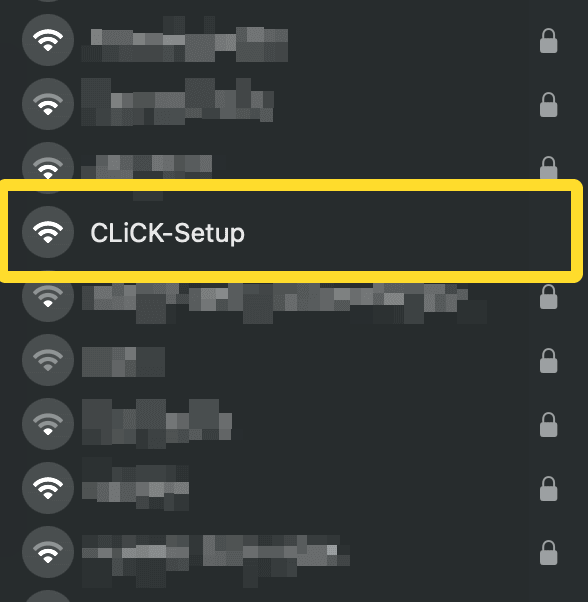
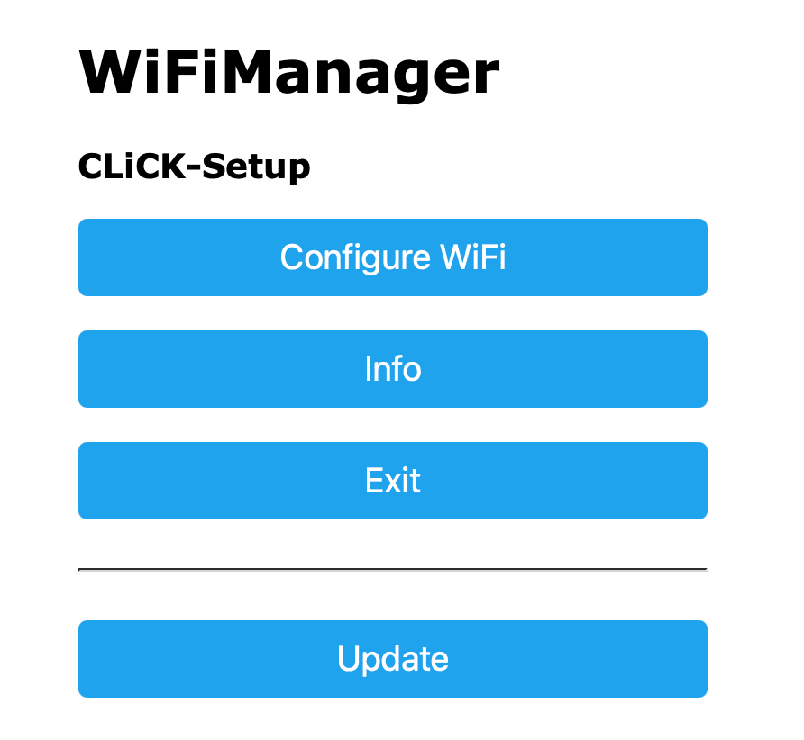

CLiCK v2
Wireless MIDI
& Utility Hub (v2.0.0)
Welcome
This device was created and designed to empower your creativity.
It is the result of many long nights and early mornings. It is born from the desire to bridge the gap between musician and instrument, and we want to say a huge thank you for your support. Our brand is built around a strong community and we hope you love your new MIDI controller as much as we do.
The PIRATE MIDI Team
Contents
Welcome
CLiCK Overview
Technical Information
Hardware Layout
Quick Start
1. Device Interface
2. Power & Navigation
3. Overview of Connectors
4. MIDI In/Out/Thru
5. USB & USB MIDI
6. Presets & MIDI Channel
7. Expression Emulation
8. Relay Switching
9. Wireless MIDI
10. Resetting or Updating
11. MIDI Implementation
Usage Examples
12. Support & Warranty
CLiCK Overview

The CLiCK is a hub for wireless MIDI, relay switching, and emulated expression control. It is made in New South Wales, Australia and supports our Device API for external control. Now you can bring more of your non-MIDI devices into your MIDI universe.
With USB power only, the CLiCK can be used as a USB MIDI interface with the built-in 3.5mm TRS MIDI jacks, a MIDI-controlled relay switcher with the ¼” TRS relay jack, and a WiFi or Bluetooth LE MIDI interface.
The online documentation adds a USB MIDI host to this list, through the second USB-C jack (see USB Host).
Each of the 128 presets can save your desired relay states for the Tip and the Ring independently as well as the position of the expression output. Please note that expression output requires a 9V DC connection and will not work on USB power only. It does not function as a CV output, but a passive variable-resistance device which emulates a normal passive expression pedal.
For even more flexibility, the MIDI out jack can be switched between MIDI Type A, MIDI Type B, or an aux switch input jack for directly controlling preset changes (up or down) without needing to send MIDI to the CLiCK.
The onboard utility LEDs let you select what kind of information you want to see so that no matter which features of the CLiCK you’re using, you get useful LED feedback.
All the settings are editable using our web editor, and many of the features can be triggered remotely by sending MIDI to the CLiCK over USB or wireless MIDI.
Technical Information
Dimensions
Metric (74 x 44 x 26 mm)
Imperial (2.9” x 1.7” x 1”)
Weight
Metric (110 g)
Imperial (6.7 oz.)
UI
RGB LEDs (2)
Power Requirement
9V DC or USB (150mA)
Box Contents
- 1x CLiCK Wireless MIDI & Utility Hub
- 1x USB Cable
Links to downloads:
It’s important that firmware updates are installed when they are available. Old firmware may not be supported by the web editor.
Firmware updates are released frequently and offer new features, bug fixes and other improvements.
User manuals are updated for each firmware update according to new features and changes.
Hardware Layout

- USB Device port for powering the CLiCK and connecting to computers to use CLiCK as a USB MIDI interface.
- USB Host port (currently inactive - stay tuned for future update) for giving USB MIDI Host functionality. Send MIDI from CLiCK to other MIDI devices over USB.
Online documentation: active from firmware v2.0.5. Connect a single USB device and receive and send USB MIDI without needing to connect to a phone or computer. - 9V DC centre negative 2.1mm barrel jack. 150mA recommended for full operation with all features. 9V required for expression emulation.
- 3.5mm TRS MIDI input and output. MIDI output is switchable between Type A and Type B TRS MIDI, as well as a third mode for auxiliary switch input for preset switching.

- ¼” TRS relay jack. Control Tip and Ring relay states independently with MIDI.
- ¼” TRS expression jack. Emulate a standard TRS expression pedal and control it via MIDI. Only works with 9V DC power applied.
- Two RGB LEDs with selectable modes to indicate relay states, expression, MIDI activity, WiFi states, or Bluetooth states.
- Acrylic window for WiFi/BLE performance. For best wireless performance, don’t cover with any metal.
- Sturdy anodised black aluminium enclosure.
Quick Start
1. Connecting to the Web Editor & Setting Up
Always connect your CLiCK to your computer via the “Device” USB port. In the web editor, click “Import From Device” to start configuring the presets on your CLiCK and change global settings.
In the editor, Global Settings allows you to change the MIDI channel of the device, change the wireless mode, and change the 3.5mm TRS MIDI out’s mode (Type A, Type B, aux switch in).
Preset Settings is where you set the relay states per preset as well as the expression position.
When you’ve chosen your settings or are ready to start testing, press the “Send to Device” button and your settings and presets will be sent to the CLiCK.
2. Wireless Mode
By default, CLiCK starts up in Bluetooth mode. WiFi mode can be alternatively selected in the web editor under “Global Wireless Settings”.
To connect to your device with BLE MIDI, use the macOS “MIDI Studio”, or “midimittr” app on iOS and iPadOS, or a BLE MIDI supported app on Windows. For more wireless setup details, see chapter 9.
Check that your CLiCK firmware is up to date.
Updates are released periodically adding new features and bug fixes. Go to:
www.update.piratemidi.com
Warning: technical documentation enclosed.
Coffee required.
1. Device Interface
RGB LEDs
The CLiCK has 2 RGB LEDs. These LEDs have multiple modes that can be selected in Global Device Settings in the web editor.
By default, LED 1 (top) flashes on when MIDI is received by the CLiCK over USB, wireless, or wired MIDI.
By default, LED 2 (bottom) shows wireless status. More details on each LED mode are given below.

Mode: Wireless Status
Bluetooth LE
When the wireless mode is set to Bluetooth LE and the LED mode is set to Wireless Status the LED will be solid red when there is no connection, and will slowly pulse blue when it is successfully connected.
WiFi
When the wireless mode is set to WiFi and the LED mode is set to Wireless Status the LED will pulse teal when the CLiCK’s own WiFi network is active (AP Mode), and will pulse purple when it is successfully connected as a client device to a local WiFi network. For instructions on how to connect the WiFi, please go to chapter 9.
Mode: MIDI In
MIDI In mode makes the LED state normally off, and when any MIDI input is received from USB, 3.5mm TRS MIDI, or wireless MIDI, the LED flashes purple for a moment and then returns to its normally-off state.
Mode: Relay State
This mode indicates the states of the relay output jack by showing different colours when the relay tip and ring are closed or tip and ring are both closed.
The online documentation lists the colours:
- Green: Tip open, Ring closed
- Purple: Tip closed, Ring open
- White: both closed (connected)
- Off: both open (disconnected)
Mode: Expression
This mode indicates the position of the expression pedal and shows any movement as the CLiCK changes the expression position. The position is noted by the increased or decreased brightness of the LED.
2. Power & Navigation
Powering Your CLiCK
You can power your CLiCK with either a USB cable, or a centre-negative 9V DC jack (2.1mm) commonly used for guitar pedals. However, the expression emulation will not work unless the 9V DC is connected. When you plug power into your CLiCK, both LEDs will flash white and then turn off.
Switching Power Sources
The CLiCK uses smart power switching so you can have both cables plugged in at once, and if you need to remove one or the other, the unit will seamlessly switch power sources without shutting down or restarting.
Power RequirementIf you’re using a 9V DC power supply, please make sure it can supply the required 150mA.
Basic Navigation
Switching Presets
Presets can be switched on the CLiCK using incoming MIDI Program Change or Control Change messages. For specifics, check the MIDI implementation chart at the back of this manual or use our Device Library.
Alternatively, when the MIDI out 3.5mm TRS jack is in Aux In mode (Global Device Settings), you can connect a double or triple TRS aux switch and increment or decrement the presets by pressing the Tip and Ring switches.
Web Editor Features for Navigation
Preset Labels
Even though the CLiCK doesn’t have a screen, we have included preset names in the device’s config data which is transferable between the device and the web editor. This will help you to keep track of what states or features you have set up on a given preset even if it is months between sessions using the web editor.
3. Overview of Connectors
USB Device (type-C)
The CLiCK can be powered by USB, and is also a class-compliant USB MIDI device. This means it will be recognised as a MIDI device without any drivers. Use it with your DAW, plugins, or music apps. The USB port is not a USB Host port and should be connected to computers, phones, tablets.
USB Host (type-C)
The CLiCK has a USB host chip onboard, which means it can act as a host for other USB devices such as MIDI controllers or pedals with USB connectors for receiving MIDI. In the current firmware version, USB Host is not active and this USB port will not do anything. Please stay tuned for a future update to use this port.
Online documentation: a single-device USB host port; it cannot read USB hubs. It supplies USB specification power (5V, up to 500mA), and the input power supply has to cover the connected device’s requirement. See USB Host.
9V DC (centre-negative)
A 2.1mm centre-negative barrel jack (common with standard guitar pedal power supplies). Requires 150mA.
Online documentation: more if powering a USB device via the USB Host port.
1/4” TRS Relay Jack
A 1/4” TRS jack that has two independent relays. One on the Tip and one on the Ring. Incoming MIDI Control Change messages can directly affect the states of the relays, or states can be pre-assigned in presets using the web editor. For MIDI Control Change assignments, please see the MIDI implementation table at the end of this manual.
1/4” TRS Expression Jack
A 1/4” TRS jack that emulates a standard TRS passive expression pedal. Incoming MIDI Control Change messages can directly affect the position of the expression pedal, or a position can be pre-assigned per preset using the web editor. For MIDI Control Change assignments, please see the MIDI implementation table at the end of this manual.
3.5mm TRS MIDI Input & Output
Each of the 3.5mm TRS jacks is, by default, a Type A TRS MIDI connection for sending standard wired MIDI (can be adapted to 1/4” or DIN5 with adapters). MIDI Input has no selectable modes, and is compliant with the MIDI specification.
The MIDI Output has three modes which are selected in the Global Settings in the web editor. The first two modes are Type A and Type B TRS MIDI. The third is Aux In. This allows you to scroll through your CLiCK’s presets by just plugging in a passive aux switch like our Aero or another TRS passive switch. No other MIDI controller required.
4. MIDI In/Out/Thru
MIDI Out
The CLiCK has four MIDI outputs: 3.5mm TRS, USB Device, USB Host, and Wireless MIDI (BLE or WiFi).
MIDI In
The CLiCK has four MIDI inputs: 3.5mm TRS, USB Device, USB Host, and Wireless MIDI (BLE or WiFi).
External MIDI Control
Using the MIDI commands detailed in the “MIDI Implementation” chapter at the end of this manual, you can send MIDI commands from another device to the CLiCK to control various features such as preset changes, expression position, relay states, and more.
MIDI Thru
There is no dedicated MIDI Thru jack on the CLiCK, however the digital MIDI Thru routing is very flexible. To set the MIDI Thru routing go to the Global MIDI Settings in the web editor. This menu allows you to choose which of the MIDI outputs the MIDI messages received on the chosen input will be sent back out to.
For example, if you choose to turn on MIDI Thru routing from the USB Device In to TRS Out, any message received on the USB Device In will be sent to TRS Out if it is in a MIDI output mode. But it will not be sent to the USB Device out or the wireless MIDI output unless those are also set to ‘on’ in the Thru routing settings.
MIDI can be looped back to outputs, but you should be careful not to create unintentional infinite loops. If a message is sent from the CLiCK USB port, and the device it is connected to is set to send the MIDI back to the CLiCK and you also have the MIDI Thru routing settings on the CLiCK set to send MIDI in to the MIDI out, you will have an infinite loop as both the CLiCK and the connected USB device send the MIDI thru from their input to their output.
5. USB & USB MIDI
Your CLiCK is a class-compliant USB MIDI device. This means you can plug the “Device” port into any kind of USB host (Windows, macOS, iOS, Android, iPadOS) and it will automatically be recognised as a MIDI device to control or receive messages from any DAW, app or plugin.
USB (type-C)
USB MIDI requires a USB host device. A host device can be a computer, tablet, phone, or some kind of USB MIDI host box designed to link a pedal with USB directly to a MIDI controller without needing a computer-like device.
The CLiCK does not offer itself as a USB host on the “Device” port and therefore cannot be directly linked from USB to USB on pedals such as the Zoom MultiStomp series or other pedals with USB MIDI.
The USB Host port, however, can act as a USB Host device and connect to pedals or devices with USB MIDI, however in the current firmware version, this port is inactive and we will announce an update to activate it at a later date.
The USB Device port receives power as well as USB MIDI, but will not power the expression emulation feature.
Note: iPads/iPhones/Android etc. may not provide enough power from their USB port to power the CLiCK. In that case, you would need to power it via a powered USB hub or the DC jack as well.
USB Host
USB MIDI devices like keyboards, synths, drum machines, MIDI controllers etc. generally require a host like a tablet, phone, or computer to work with USB MIDI. The CLiCK performs this hardware role and is able to send and receive USB MIDI from such devices directly.
USB Host will allow USB MIDI messages from class-compliant USB MIDI devices to be fed into your CLiCK. Use MIDI Thru settings to choose where those incoming messages are sent to, and whether outgoing messages are sent to the USB host port.
This includes devices that only have USB MIDI and no regular MIDI cable connectors (such as the Zoom MultiStomp pedals, or UAFX pedals).
Only one device can be connected to the USB Host port at a time, and it will be able to supply the standard USB 5V 500mA power to your device.
Note
Please keep in mind that some devices may not be designed to be powered solely by the USB port, and will still need a power supply.
Requirements
This feature will only work with USB “Full Speed” (i.e. USB 2.0) devices.
Also, some composite devices may not work. Composite devices are devices that enumerate as multiple different types of USB devices at once. For example, the device may work as an audio interface and a MIDI device at the same time.
If you encounter issues with a device, we may be able to investigate a fix. Please email us and let us know as much detail as possible about the situation: support@piratemidi.com
6. Presets & MIDI Channel
Presets
There are 128 presets available for you to customise. Sending MIDI CC 24 will advance to the next preset, and sending MIDI CC 25 will go to the previous preset.
Save A Preset
To save the current settings to the current preset, send MIDI CC 23 and the relay states will overwrite the preset’s relay states.
Go to a Preset
To go directly to a particular preset, you can use CCs or PCs. Send CC 26 with your chosen preset number as the value (0-127). Or send a PC message of your chosen preset number (0-127).
MIDI Channel
Out of the box, your CLiCK will respond to any MIDI channel. If you want to change the MIDI channel so that it only listens to MIDI messages sent with its specific channel number, set the MIDI channel using the web editor.
7. Expression Emulation
The CLiCK requires the 9V DC power to be used for expression emulation to work.
Expression pedal emulation does not output CV voltage, or any other active signal. Your device with an expression jack will pass a small voltage through the CLiCK’s expression jack, and the digitally-controlled potentiometer in the CLiCK acts just like the potentiometer in any standard passive expression pedal. As CC 11 is sent to the CLiCK, the potentiometer is moved just like when a standard expression pedal is moved by a foot.
Setting an Expression Position Per-Preset
In the web editor, under “Preset Settings” there is an “Expression Position” field. Setting this with a value from 0-127 gives the starting position for the expression jack when that preset is activated. The digitally-controlled potentiometer will jump to that position when the preset is activated.
Setting an Expression Position On-the-Fly
To set the Expression position at any time, send a control change message with CC 11. You can use sliders, touch screens, actual expression pedals on your MIDI controller and many other methods to send this Control Change message which will give you smooth expression pedal emulation for your non-MIDI pedals with expression jacks.
8. Relay Switching
The 1/4” relay switching jack on the CLiCK lets you control any standard 1/4” jack that is designed to have a passive switch plugged into it for auxiliary switching. This includes amplifier channels, aux jacks on pedals, amps, mixing desks, and other equipment.
TRS stands for “Tip”, “Ring”, and “Sleeve”. This denotes the three bands of the connector often referred to as a “stereo” or “balanced” jack. Sleeve is ground, and the Tip and Ring are each connected to a relay for digital control of the switch with MIDI or presets.
The Tip and Ring relays are both controllable independently with per-preset configured states using the web editor, or on-the-fly using incoming MIDI Control Change messages as defined in the MIDI implementation table at the back of this manual. You can set their state specifically, or you can toggle them from their current state.
By using the control change messages as defined in the MIDI implementation table, you can create normally open (N.O.) or normally closed (N.C.) switch emulation for your external equipment. This means that virtually any of your aux-switchable gear can now become part of your MIDI controlled rig.
9. Wireless MIDI
Bluetooth Low Energy (BLE)
BLE mode lets you connect your CLiCK to your computer, phone, or tablet to control your relays, expression, or other MIDI controllers wirelessly.
MIDI over Bluetooth is low-latency, but performance depends on your environment and how much local interference there is around you. Because of this we cannot provide any guarantees for range and reliability. However, in general, BLE MIDI is considered to be quite reliable by musicians even in live performance environments. Please test your equipment thoroughly before relying on BLE solely in a performance environment.
BLE Mode Startup & macOS
BLE is the default wireless mode of the CLiCK and will be active when you plug in your CLiCK straight out of the box. LED2 will show the BLE connection status. Red indicates BLE is not connected. Pulsing Blue indicates BLE is connected.
Connecting to a Mac computer requires you to open the Audio MIDI Setup app (macOS system app, not third party), click the MIDI Studio menu bar and choose “Bluetooth Configuration”.


iOS or iPadOS
To connect BLE to your iPhone or iPad and use Bluetooth MIDI from your audio apps to your CLiCK, you will need to use the midimittr app to connect. Go to the Devices tab, and the CLiCK BLE connection will be available for you to connect to.

Windows
To make sure BLE works properly on Windows, please download the Korg BLE driver first.
Note: You can check whether the installation was successful in the sound, video, and game controller list of the device manager.
In Windows, click “Start” > “Settings” > “Devices”, open the “Bluetooth and other devices” settings page, turn on the CLiCK, and click “Add Bluetooth or other devices”.
After entering the “Add Device” window, click “Bluetooth”, click the CLiCK BLE item, and then click “Connect”.
If you see “Your device is ready to go”, click “Done” to close the window (after connecting, you can see your CLiCK in the Bluetooth list of the device manager).
Thank you to CME Pro for help with these instructions. CME Pro also create BLE MIDI products.
WiFi
WiFi mode lets you connect your CLiCK to your network to receive and send RTP MIDI.
RTP MIDI (Real-time Protocol MIDI), also known as AppleMIDI, is not exclusive to macOS — it is available on Windows and mobile platforms as well, though with varying levels of native support:
macOS and iOS
- Built-in support.
- RTP MIDI is integrated into the operating system via the Audio MIDI Setup utility.
- iOS devices also support it natively (e.g., apps like AUM, Audiobus, and others use it under the hood).
Windows
- Not built-in, but available through third-party drivers.
- The most widely used solution is rtpMIDI by Tobias Erichsen, which is free and stable.
- Once installed, Windows users can communicate with other RTP MIDI devices (Macs, iPads, etc.) over a network.
Android
- No native OS-level support, but some apps implement RTP MIDI manually.
- Example apps: TouchDAW – supports RTP MIDI, or MobMuPlat (with patchwork).
- Integration depends on each app’s developer — it’s not seamless like on iOS.
Embedded Devices / DIY
- Some microcontroller platforms and devices (e.g. ESP32, Raspberry Pi) can implement RTP MIDI using open-source libraries like:
- Arduino AppleMIDI library
- rtpmidid (Linux daemon)
WiFi Setup & Configuration
After WiFi mode has been selected in the web editor and the config has been sent to the device, the CLiCK will reboot and BLE will be deactivated - replaced by WiFi. Before any configuration has been done, the LED will pulse in a teal colour indicating that the device is in AP (access point) mode and is ready for configuration.
First, use your computer or mobile device to connect to the CLiCK’s WiFi network called “CLiCK Setup”. After your device is connected you may get an automatic popup window with the configuration options. If not, open your browser and type “192.168.4.1” in the address bar and press enter.


Selecting your WiFi Network
Click Configure WiFi to select your local network, enter the password, and connect. Once your device connects, this page will become unresponsive because the CLiCK has connected to the network and is not offering an AP connection. You can now connect your device back to your local WiFi. If the CLiCK has also successfully connected, you should now notice that the Wireless Status LED on the CLiCK has turned purple and is pulsing slowly.
Ready
You can now use RTP MIDI to send and receive MIDI with your CLiCK over your network.
Edit Saved WiFi Details
To change the saved WiFi details, you’ll need to turn off the network of the saved details so that it fails to connect. When it fails, it will default to broadcasting its own “CLiCK Setup” WiFi network again.
10. Resetting or Updating
Factory Reset
This will clear all presets and all global settings. Make sure you have backed up your device if you have a lot of work saved on the device.
A factory reset can be performed by clicking the help button in the bottom right corner of the web editor and clicking Factory Reset. You will be given a warning and then you can reset the device. The LEDs will flash and after about 20 seconds you can reboot the device and use it as normal. If this doesn’t work for you, please contact support@piratemidi.com for advice.
Updating Firmware
This user manual represents the features and settings for the firmware version marked in the footer of each page and on the cover. If your device doesn’t match, this manual will likely be incorrect for some details. Please update your device and download the latest user manual.
Up to date information for firmware updates can be found at www.learn.piratemidi.com/downloads/firmware-updates, and the online updater itself is found at: www.update.piratemidi.com
The CLiCK can be updated through the firmware updater app, or using a manual firmware update method as a last resort. Both are outlined in the webpage linked above.
Troubleshooting
If, for some reason, the update is not successful or the process is not able to start, please contact us at support@piratemidi.com
Entering Update Mode
Manual Updates are only required as a last resort if something went wrong during the normal update process.
In case of some kind of software error where you are unable to use the updater app, you can enter the firmware update mode manually and follow instructions given to you by Pirate MIDI staff.
- Connect the CLiCK to computer with USB cable
- Click the “help” icon in the bottom right corner of the screen
- Click the “Force DFU” button (DFU = Device Firmware Update)
After these steps, you will need to follow the manual firmware update process as documented at https://learn.piratemidi.com/downloads/troubleshooting or contact support@piratemidi.com
11. MIDI Implementation
The CLiCK can be controlled by MIDI from an external MIDI device. You can set the MIDI channel in the web editor’s Global MIDI Settings menu.
The online documentation says the CLiCK v2 is set to MIDI channel 1 by default, and that sending any of the messages below via wired, wireless or USB MIDI on the CLiCK’s set MIDI channel triggers the listed function. Chapter 6 says it responds to any channel out of the box.
| Function | MIDI CC# | Value |
|---|---|---|
| Navigation | ||
| Save to Current Preset (online documentation) | 23 | Any (0-127) |
| Preset Up | 24 | Any (0-127) |
| Preset Down | 25 | Any (0-127) |
| Go to Preset ‘x’ | 26 | 0-127 |
| Go to Bank ‘x’ (PC) | PC | 0-127 |
| Action Control | ||
| Tip Relay: On | 1 | 127 |
| Tip Relay: Off | 1 | 0 |
| Tip Relay: Toggle | 1 | 64 |
| Ring Relay: On | 2 | 127 |
| Ring Relay: Off | 2 | 0 |
| Ring Relay: Toggle | 2 | 64 |
| Tip & Ring: On | 3 | 127 |
| Tip & Ring: Off | 3 | 0 |
| Tip & Ring: Toggle | 3 | 64 |
| Expression Emulation Position | 11 | 0-127 |
Usage Examples
The CLiCK V2 is a versatile tool designed to integrate non-MIDI equipment into a MIDI-controlled environment. Below are simple, single-feature examples of how to use the CLiCK V2 in a real-world setup.
1. Controlling Amplifier Channels (Relay Switching)
If you have a traditional guitar amplifier with a 1/4" footswitch jack for channel switching, the CLiCK can automate this via MIDI.
Warning
Some devices have an external footswitch that is more than just a passive one, two, or three switch TRS footswitch. If there are LEDs, a DIN jack, or more than three footswitches, there is a high likelihood that the CLiCK will either not fully unlock the same features as the factory footswitch, or not work at all.
- The Setup: Connect a 1/4" TRS cable from the Relay Jack on the CLiCK to the footswitch input of your amplifier.
- The Action: Send a MIDI CC #1 message to the CLiCK.
- The Result:
- Sending CC #1 with a value of 127 will close the “Tip” relay (e.g., switching to the Lead channel).
- Sending CC #1 with a value of 0 will open it (e.g., returning to the Clean channel).
More Details
Inside the web editor, you can set the relay states per preset. This means that as you send messages to the CLiCK to change its preset, the relay states can automatically change to pre-determined states.
You can use this method to set up presets that follow the songs in your live set, song sections, or just generic “sounds”.
Obviously the two relay states can only be combined in a handful of ways, but with 128 presets at your disposal, you can work out, in advance, exactly which preset requires which states so you don’t have to think about it in a live setting.
2. MIDI-Automated Expression (Expression Emulation)
You can control the expression input of an analog pedal (like a boutique delay or a pitch shifter) using MIDI CC messages from your DAW or a MIDI foot controller.
- The Setup: Connect a 1/4" TRS cable from the Expression Jack on the CLiCK to the expression input of your target pedal. Ensure the CLiCK is powered by 9V DC.
- The Action: Send MIDI CC #11 with values ranging from 0 to 127 to the CLiCK.
- The Result: The CLiCK changes its internal resistance to emulate a physical expression pedal moving from heel (0) to toe (127), allowing for automated sweeps or specific parameter settings per preset.
More Details
Each of the 128 presets of the CLiCK has a field in the Web Editor where you can pre-set the Expression position from 0-100%. This means that as you send MIDI to the CLiCK to select a preset, the expression position can jump instantly to the new value that you have previously chosen.
This feature is really powerful for incorporating non-MIDI pedals with an expression jack into a MIDI-controllable rig.
Another possibility is having a single expression pedal connected to your main MIDI controller, and using that to generate the MIDI expression messages, send them to the CLiCK, and then the expression pedal on the MIDI controller is controlling the non-MIDI expression jack.
This is powerful because with a MIDI controller like our BridgeOS devices, you can change what the expression pedal does at different times and on different presets.
For example, if on one preset you don’t want to interact with that non-MIDI pedal, you could assign your expression pedal to target a different MIDI controllable pedal on your rig. But then on the next preset, or at the press of a switch, suddenly the expression pedal does control the non-MIDI pedal’s expression jack (via the CLiCK) again.
3. Wireless Control from an iPad (Bluetooth MIDI)
The CLiCK can act as a wireless bridge, allowing you to control your entire pedalboard from a mobile device without a USB cable.
- The Setup: Enable Bluetooth LE in the CLiCK web editor. Open a MIDI app (like midimittr or a DAW) on your iPad.
- The Action: Pair the iPad with the CLiCK and send Program Change (PC) or Control Change (CC) messages from the app.
- The Result: The CLiCK receives the wireless messages and passes them through its 3.5mm TRS MIDI Out to your other pedals, changing their presets or parameters instantly.
Warning
Using wireless technology in large crowds and groups of people can be risky. There are significant interference risks. Always test in your target environment before relying on wireless technology for a live event!
More Details
Another thing to consider is that with the Bluetooth functionality, there is no need for any physical MIDI controller to send messages to or change presets on the CLiCK. An app like TouchOSC or MIDI Designer or Ribn can send MIDI messages to the CLiCK directly without the need for more expensive hardware.
4. Bridging MIDI Types (Type A to Type B)
Different manufacturers use different TRS MIDI standards (Type A vs. Type B). The CLiCK can resolve these conflicts without custom crossover cables.
- The Setup: In the Web Editor, set the MIDI Out port to “Type B.”
- The Action: Plug a standard TRS cable from the CLiCK’s MIDI Out into a pedal that requires Type B MIDI (such as older Arturia or Novation gear, or even some Ring Active devices like Chase Bliss Audio pedals).
- The Result: The CLiCK automatically swaps the Tip and Ring signals, ensuring your MIDI data is readable by the target device.
More Details
This feature is designed to save you from buying special cables and from nasty surprises when you realise your gear isn’t “standard”. However, it can’t be guaranteed to work with all devices. Chase Bliss Audio pedals, for example, will usually work with Type B, but some older models only work with the Tip of the TRS cable physically disconnected.
If you need to connect to many different devices with more than one different type of MIDI TRS connection, you may need a MIDI splitter or MIDI hub. If so, check out the Pirate MIDI Nexus MIDI Hub for a device with 10 different MIDI outputs that can all be individually set between Type A, Type B, Tip Active, and Ring Active.
5. Adding Preset “Save” Functionality to Analog Gear
You can use the CLiCK to “save” the state of your analog amp or pedals as part of a MIDI preset.
- The Setup: Manually set your Relay states (Tip/Ring) or Expression position to where you want them for a specific song part. Do this in the Web Editor.
- The Action: Send MIDI CC 23 to the CLiCK.
- The Result: The CLiCK saves the current relay and expression positions into the active preset. Next time you call up that PC number, the CLiCK will automatically recall those exact analog settings.
Tip
Sometimes saving “on the fly” can get confusing. Try to avoid saving more than one or two new presets when you’re not working with the Web Editor. Writing notes to help you remember the changes stops things getting too messy.
6. Using an External Aux Switch (Aux In Mode)
If you don’t want to use a MIDI controller to change CLiCK presets, you can use a simple two-button footswitch.
- The Setup: In the Web Editor, set the 3.5mm MIDI Out jack to Aux In mode. Connect a 2-button momentary footswitch using a 3.5mm TRS adapter.
- The Action: Press the left or right button on your footswitch.
- The Result: The CLiCK will increment (Preset Up) or decrement (Preset Down) through its 128 internal presets, updating the Relays and Expression position accordingly.
More Details
Even though this is far from the most complex thing you can do with a CLiCK, it still opens up lots of new possibilities for gear that doesn’t have presets or MIDI control. Not only that, but you can use one little auxiliary footswitch to control “presets” on both a TRS aux switch jack as well as an analog expression pedal jack!
12. Support & Warranty
Thank you for purchasing a CLiCK!
If you have any questions, please feel free to contact us via support@piratemidi.com or use technical support at: www.learn.piratemidi.com
Manufacturing defects are covered by our warranty. Please contact us if your device is defective.
Australian domestic customers are covered by Australian Consumer Law which requires repair or replacement for devices that do not fulfil their advertised purpose.
International (Non-Australian) customers are covered by our own workmanship guarantee. We aim to create a satisfactory outcome for every single customer. Please contact us if you have an issue with your device.
Customer-caused damage may be repairable for a fee. We offer repair services for most components that receive damage. Contact us for details.